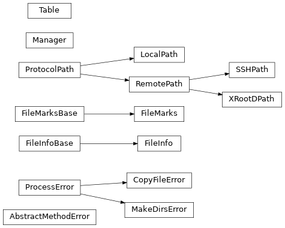

Functions and classes¶
Here you can find the documentation on the functions and classes of the hep_rfm package.
Functions¶
copy_file(source, target[, wdir, loglock, …]) |
Main function to copy a file from a source to a target. |
rfm_hash(path) |
Use the SHA512 hash function to get the file ID of the file in the given path. |
available_path(paths[, modifiers, …]) |
Return the first available path from a list of paths. |
available_working_path(path[, modifiers, …]) |
If an accessible path can be resolved from “path”, it returns it. |
is_remote(path) |
Return whether the given protocol path belongs to a remote protocol or not. |
process(*args) |
Create a subprocess object where the output from “stdout” and “stderr” is redirected to subprocess.PIPE. |
protocol_path(path[, protocol]) |
Return a instantiated protocol using the given path and protocol ID. |
register_protocol(name) |
Decorator to register a protocol with the given name. |
remote_protocol(a, b) |
Determine the protocol to use given two paths to files. |
Classes¶
AbstractMethodError() |
Define an error for base classes with abstract methods. |
ProcessError(msg, stderr) |
Define an error to be raised when a subprocess call fails. |
CopyFileError(ipath, opath, stderr) |
Define an error to be raised when copying a file. |
MakeDirsError(target, stderr) |
Error to be displayed when failing making directories. |
FileInfoBase |
Base class for an object storing the information about a file. |
FileInfo |
Object to store the information about a file. |
FileMarksBase |
Base class representing an object storing the time-stamp and file ID of a file. |
FileMarks |
Represent an object storing the time-stamp and file ID of a file. |
ProtocolPath(path[, path_checker]) |
Base class to represent a protocol to manage a path to a file. |
LocalPath(path) |
Represent a path to a local file. |
RemotePath(path[, path_checker]) |
Represent a remote path. |
SSHPath(path) |
Represent a path to be handled using SSH. |
XRootDPath(path) |
Represent a path to be handled using XROOTD protocol. |
Table([files, description, last_update, version]) |
Create a table storing the information about files. |
Manager() |
Represent a class to store tables in different local/remote hosts, being able to do updates among them. |
Class Inheritance Diagram¶
